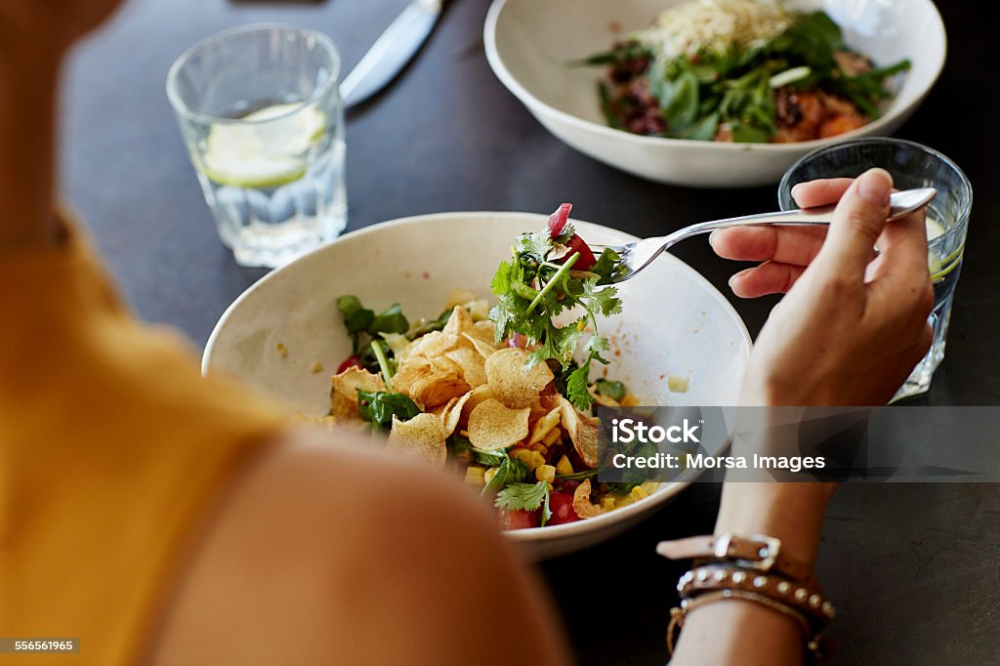

Delight your guests. Do what you love. Thrive.
Over the past 5 years, the juice bar industry has grown steadily, with over 5,000 active juice bars open in the United States as of 2021. And, it makes sense as to why: juicing at home is difficult and time-consuming while store-bought juices often come with added sugar and preservatives. This makes a juice bar the perfect place for health-conscious consumers. It’s a convenient way for them to have their favorite juices fast and freshly pressed. As juice bars grow in popularity, there's no shortage of space for unique juice bar ideas to take hold. At the end of the day, your juice bar’s success comes down to staying true to your vision and having an attractive concept or theme. This will allow you to create a place that draws in more new and loyal customers Here’s a list of unique restaurant ideas to get the creative juices (see what we did there?) flowing!
Welcome to NS Juice Bar, where health meets flavor in every sip! At NS Juice Bar, we are passionate about crafting delicious and nutritious beverages that not only tantalize your taste buds but also contribute to your overall well-being. Our journey began with a simple belief – that a refreshing, revitalizing drink can be a source of joy and a boost for a healthier lifestyle. What sets NS Juice Bar apart is our commitment to using the freshest, locally-sourced ingredients to create a menu that bursts with natural goodness. We believe in the power of real fruits, vegetables, and superfoods, carefully blended to perfection to bring you a diverse range of juices, smoothies, and wellness shots. Our team of dedicated juicers and mixologists are not just experts in their craft; they are enthusiasts who share a common goal – to make healthy living a delightful experience. Whether you're a fitness enthusiast, a wellness seeker, or simply someone who appreciates the pleasure of a good drink, NS Juice Bar has something for everyone. We understand that each person's journey to health is unique. That's why we offer a customizable menu, allowing you to tailor your drink to your specific preferences and dietary needs. Whether you're looking for a post-workout protein boost, a refreshing hydrating blend, or an immunity-boosting elixir, NS Juice Bar has you covered. Beyond the drinks, NS Juice Bar is a community hub where friends and families gather to share stories, laughter, and good vibes. We believe that a healthy lifestyle is not just about what you consume, but also about the connections you make and the positive energy you surround yourself with. Thank you for joining us on this flavorful adventure. We invite you to sip, savor, and celebrate a healthier you at NS Juice Bar. Cheers to good health and great taste!